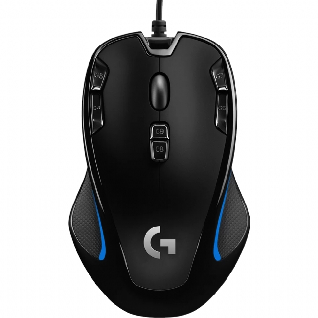

Output on GOOGLE LENS - Lenovo 300 USB Mouse
Output on MOBILENET MODEL - Mouse
Result -Os mesmos estão corretos mas o Lens foi mais próximo
Output on GOOGLE LENS - Lápis Bonfold Mataraj
Output on MOBILENET MODEL - Lapiseira
Result -Google Lens foi mais correto